UX case study · General Assembly · 2023
Good Work Hub: helping new volunteers find their footing
A proposed redesign of a volunteer-management platform for charities, focused on the first few minutes after a volunteer signs up.
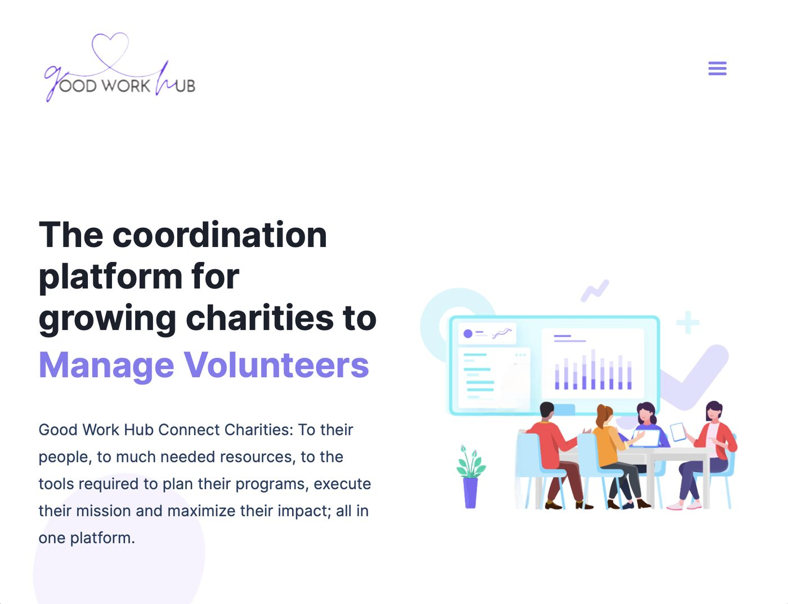
The problem
Good Work Hub gives charities one place to manage their volunteers: teams, events, files and messages. Signing up was quick and easy. But once new volunteers got inside, nothing told them what to do next, and many stalled on the very first screen.
What we found
We tested the existing platform with first-time users and ran a heuristic evaluation alongside it. Small interface problems (overlapping text, misaligned buttons, low contrast, inconsistent controls) all added up to the same frustration for someone seeing the platform for the first time.
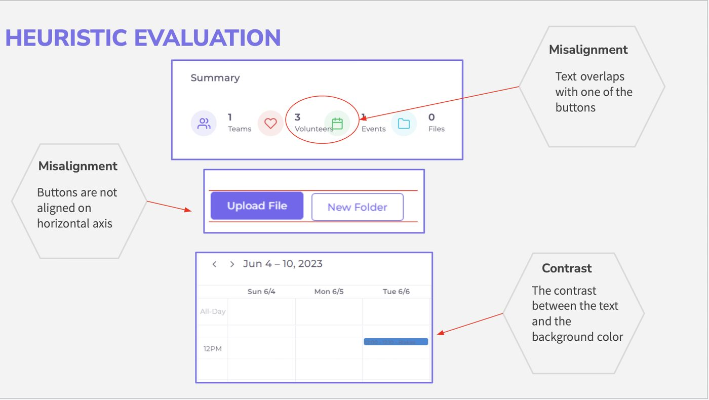
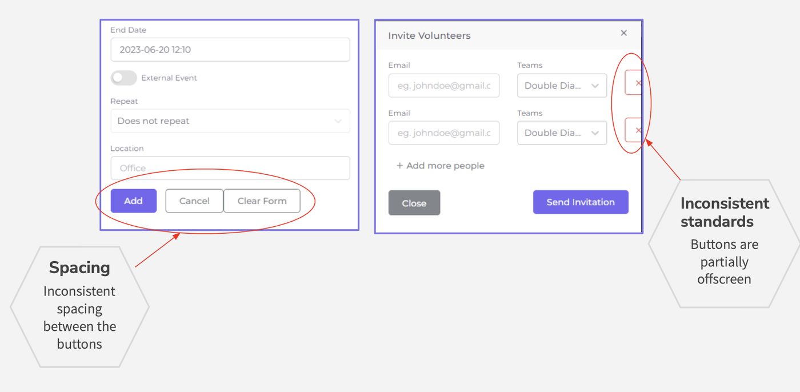
Who we designed for
The research pointed to one person: a willing volunteer who is comfortable online, but gets lost when a new tool gives her no guidance.
Brenda Smith, 55
Retired banker in San Jose, CA, now volunteering with local charities. Comfortable with email and browsing, but wouldn’t call herself tech-savvy.
Needs & goals
- A tool that is intuitive and straightforward
- A tutorial or guide when picking up something new
Frustrations
- No onboarding when she starts using a new system
- Technical problems she can’t solve on her own make her want to quit
Behaviors
- Patient and willing to learn
- Prefers to be guided through a new platform step by step
“Technology is just another tool, not a barrier. I believe a little guidance would go a long way in making these digital tools work for me, not against me.”
The solution: guided onboarding
Rather than redesigning every screen, we added a layer of guidance that meets volunteers the moment they log in and walks them through each part of the platform at their own pace.
01
A welcome that offers a tour
Right after sign-up, volunteers get a personal welcome tied to their role and organization, with the choice to start a tour now or come back to it later.
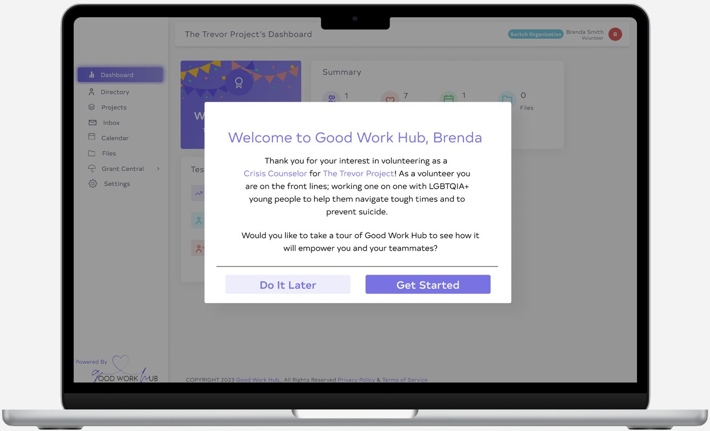
02
Short walkthroughs for each section
Each area (directory, calendar, files, inbox) has a few small tips that point at the real controls and tell people what to do there.
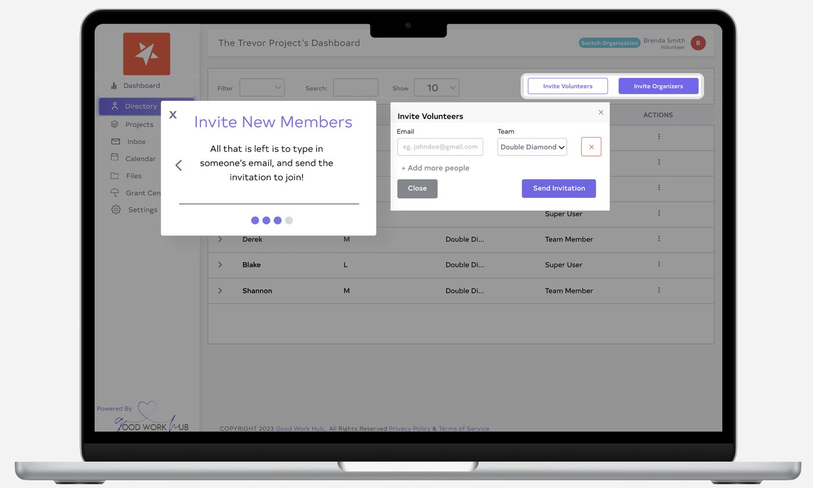
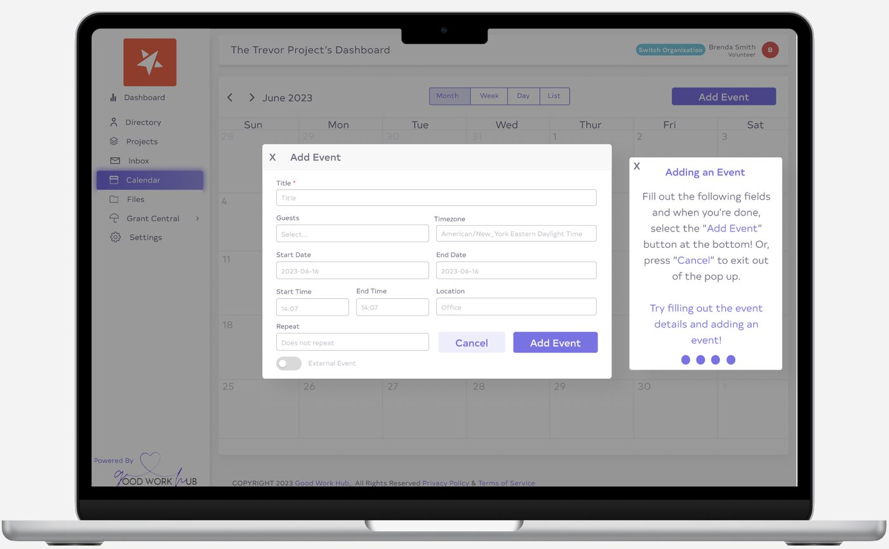
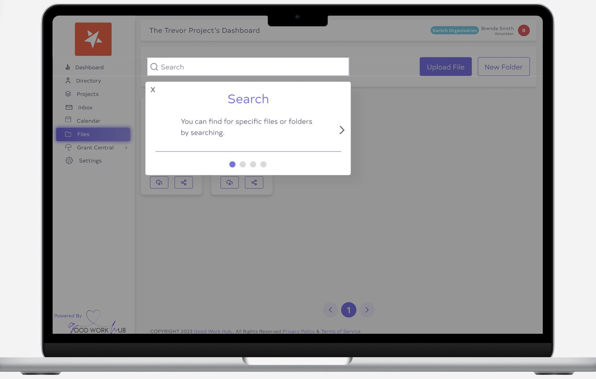
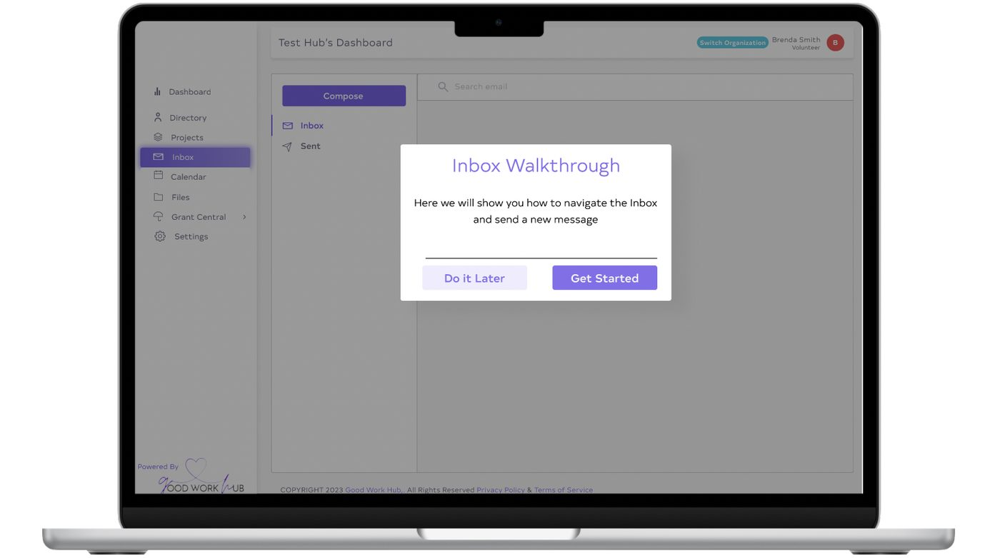
03
Progress you can see
An onboarding progress ring on the dashboard and a checklist on the profile show volunteers what they’ve finished and what’s left, so they can pick up where they left off.
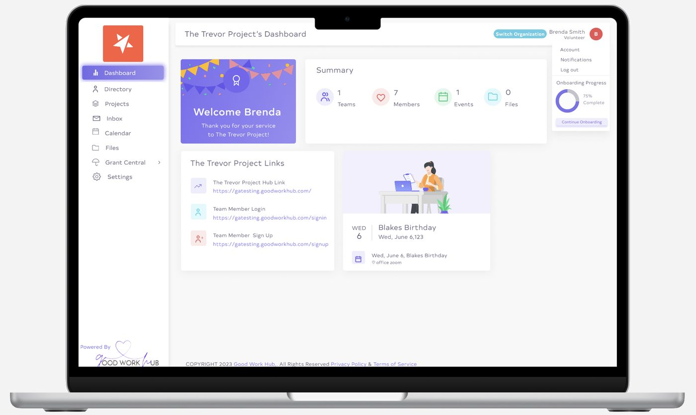
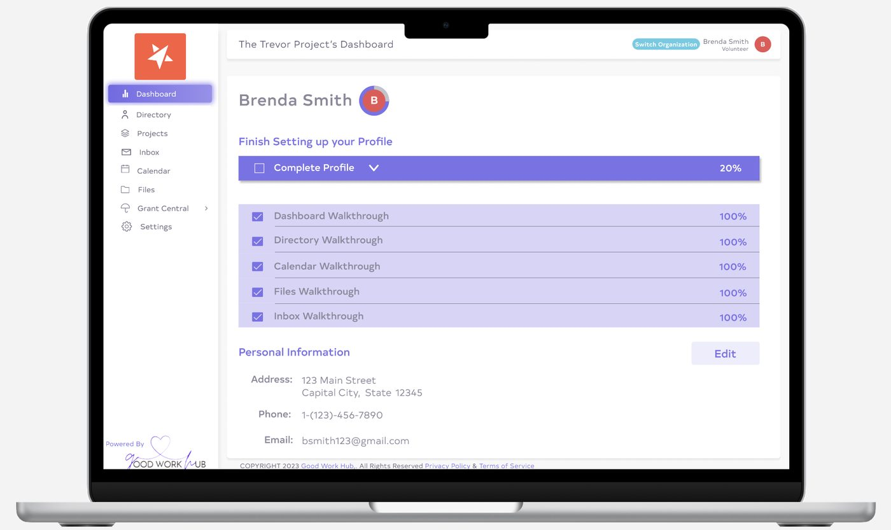
The prototype
A full run-through, from sign-up to the end of the inbox walkthrough.
Testing it
We ran unmoderated usability tests on the prototype against two goals:
- Complete sign-up in under 30 seconds with no more than 1 error
- Complete onboarding in under 3 minutes with no more than 5 errors
The misclicks clustered in two places, which told us exactly what to fix:
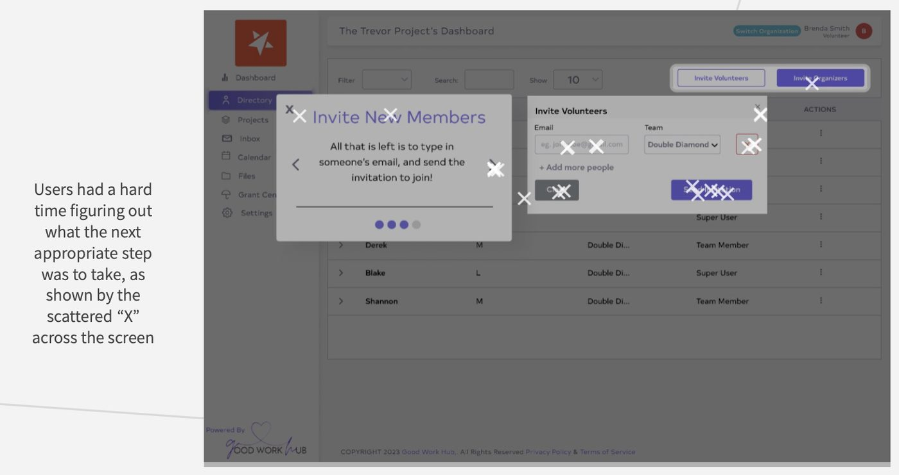
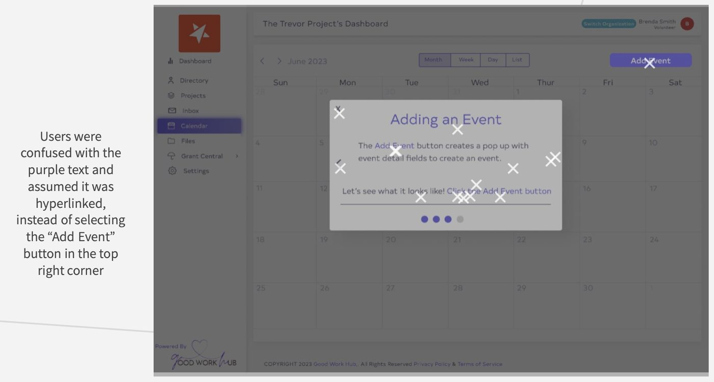
What I’d do next
- Give every tip one obvious “next” action, in the same place each time
- Keep instructional text visually different from links
- Fix the original heuristic issues (alignment, contrast, offscreen buttons) so the tour sits on a clean foundation
What I took from it
The biggest problem wasn’t a missing feature, it was a missing next step. That lesson carried straight into sales: find where someone gets stuck, then make the next step obvious. It’s how I run discovery, and it’s why I built my own CRM.